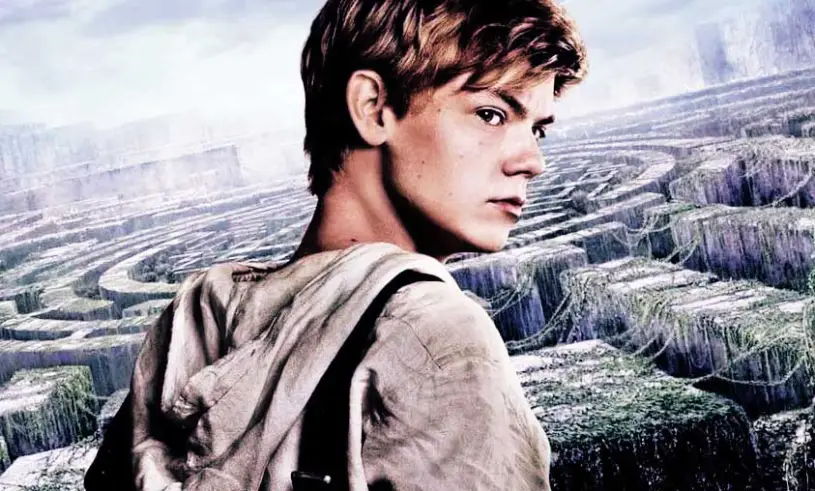

This page is going to be all about Newt and the stories he as been in.
Newt is 16 in the books and was known as the glue. He was also the second in command at the glade/maze his responseabiltites included
The Mazerunner is the first book to the series. the plot about this book is that this science group called " W.C.K.D made up this project to test these kids who are immune to a virus that took over the world they live in. they found these kids and threw them into a maze for years till each kid was in it and people started to find out what was in the maze and how to leave. once that started happening the maze started to act weird. there was a girl who came into the maze with a note saying "shes the last one ever" which was then cause to theorectally the end of the world.
newt was obviously a big part of the end part as he was one of the people beside Thomas and Teresa to leave the maze and see whats out there in the open...
this is where they are out of the maze and are "saved" by W.C.K.D and then sent on another quest to find the safe haven as W.C.K.D was still testing them. it lead to the boys and the girls being split up. which caused a lot of issues between to potential lovers thomas and Teresa they are treck through an apocoliptic world infeseted with these zombie like people called "Cranks"and that was really scary as most people were immune but there was 2 kids who were not. one of them being newt.
in The Death Cure newt helps his friends take a group of immune kids to a hideout then go with Thomas to save Minho from W.C.K.D as he was taken. Newt was the glue to the very end of his life. Newt was eventually taken but the Flare and changed into a crank.